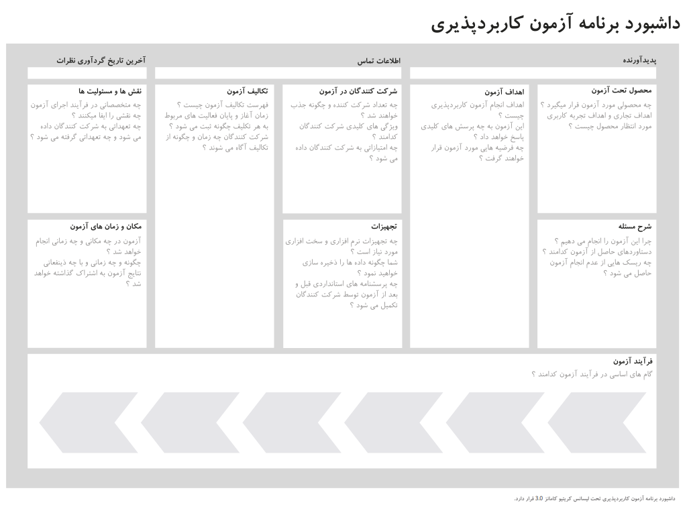

مرجع کاربردپذیری
کاربردپذیری
میزانی که یک محصول میتواند توسط کاربران خاصی برای رسیدن به هدفی معین، مورد استفاده قرار گرفته و در حین استفاده، ضمن داشتن اثربخشی و کارایی، رضایت کاربر را در زمینهٔ مورد استفاده تأمین کند.
اهداف کاربردپذیری
- یادآورپذیری Memorability
- آموزشپذیری Learnability
- کارآیی Efficency
- رضایتمندی Satisfaction
- خطا Error
- کارآمدی یا اثربخشی Effectiveness
- ایمنی Safety
- امکانات Utility
- دسترسیپذیری Accessibility
- یافتپذیری Findability
آزمون کاربردپذیری
تعریف
انواع آزمون
- ارزیابی اکتشافی
- بررسی کارشناسی
- مرتبسازی کارتها
- مصاحبه با کاربران
- User Survey
- Task Analysis
- A/B Testing
- Eye Tracking
- Mouse Tracking
- First Click
- 5 Second
- Tree Testing
- User Testing
- Cognitive Walkthroughs
- RITE
- Think Aloud
- Guerilla
- Focus groups
داشبورد کاربردپذیری

دانلود
ابزارهای کاربردپذیری
۱۰ اصل ارزیابی اکتشافی
۱۰ اصل نیسلن به طور مشخص راهنمای کاربردپذیری نیست
- مشاهده وضعیت سیستم
- همخوانی بین سیستم و دنیای واقعی
- آزادی و کنترل کاربر
- ثبات و استانداردها
- پیشگیری از خطا
- تشخیص به جای فراخوانی
- انعظافپذیری و کارآیی استفاده
- طراحی مینیمال و زیبا
- کمک به کاربران برای شناخت، تشخیص و اصلاح خطا
- راهنما و مستندات
منابع بیشتر